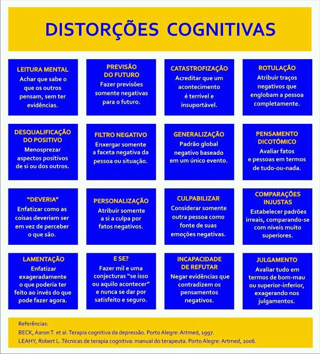

A psicoterapia é um tipo de terapia usado com a finalidade de tratar problemas psicológicos tais como depressão, ansiedade, dificuldades de relacionamento e problemas de saúde mental. É processo dialético efetuado entre um profissional psicólogo/médico (o psicoterapeuta) e o cliente (o paciente).
Por ser da área da saúde mental, a psicoterapia é a principal linha de tratamento para qualquer assunto referente à mente, para isso faz uso de métodos, técnicas e intervenções psicológicas cujo objetivos centrais são:
A psicoterapia pode ser individual, de casal, de família e em grupos. Existem mais de uma abordagem psicoterápica. Aqui apresento algumas das abordagens mais conhecidas.
"O que perturba o ser humano não são os fatos, mas a interpretação que ele faz dos fatos." Epitectus - Século I
Mais de cinquenta anos depois que Aaron T. Beck e Albert Ellis delinearam os fundamentos da abordagem psicoterápica hoje denominada amplamente de terapia cognitivo comportamental (TCC), a pesquisa clínica e experimental, conduzida desde então, continua comprovando sua eficácia em diversos transtornos psiquiátricos. Com o objetivo de embasar suas conceituações e aplicações clínicas em evidências científicas, a TCC se tornou a modalidade de tratamento psicossocial mais pesquisada e validada em todo o mundo. (KNAPP, 2004).
Terapia cognitivo-comportamental é um termo genérico que abrange uma variedade de mais de 20 abordagens dentro do modelo cognitivo e cognitivo-comportamental. Todas as terapias cognitivo-comportamentais derivam de um modelo cognitivo prototípico e compartilham alguns pressupostos básicos, mesmo quando apresentam diferentes abordagens conceituais e estratégias nos diversos transtornos. Três proposições fundamentais definem as características que estão no núcleo das terapias cognitivo-comportamentais.
Diferente da psicanálise a TCC não interpreta os conteúdos, o material trazido à consulta é elaborado em conjunto com o paciente num trabalho de identificar, examinar e corrigir as distorções do pensamento que causam sofrimento emocional no indivíduo. A Terapia Cognitiva focaliza seu trabalho em identificar e corrigir padrões de pensamento conscientes e inconscientes.
A abordagem beckiana, originalmente desenvolvida para o tratamento da depressão unipolar, é aplicada hoje em dia em uma grande variedade de transtornos e populações, incluindo transtornos de ansiedade, dependências químicas, transtornos da personalidade, transtornos alimentares, transtorno bipolar, casais e famílias, crianças e adolescentes, entre outros.
A terapia cognitiva baseia-se na premissa de que a inter-relação entre cognição, emoção e comportamento está implicada no funcionamento normal do ser humano e, em especial, na psicopatologia. Um evento comum do nosso cotidiano pode gerar diferentes formas de sentir e agir em diferentes pessoas, mas não é o evento em si que gera as emoções e os comportamentos, mas sim o que nós pensamos sobre o evento, nossas emoções e comportamentos estão influenciadas pelo que pensamos. Nós sentimos o que pensamos. Os eventos ativam pensamentos, os quais geram, como consequência, as emoções e os comportamentos. O objetivo da terapia cognitiva é corrigir as distorções do pensamento e com isso tornar as emoções e os comportamentos mais funcionais e adaptativos para a vida do sujeito. (KNAPP, 2004).
A terapia familiar, muitas vezes associada à sua variante de terapia de casal, e conhecida como terapia familiar sistêmica é um tipo de psicoterapia que se aplica a casais ou famílias, onde os membros possuem algum nível de relacionamento. A terapia familiar sistêmica tende a compreender os problemas em termos de sistemas de interação entre os membros de uma família. Desse modo, os relacionamentos familiares são considerados como um fator determinante para a saúde mental e os problemas familiares são vistos mais como um resultado das interações sistêmicas, do que como uma característica particular de um indivíduo.
Os terapeutas familiares costumam orientar o seu foco de intervenção mais para o modo como os padrões de interação sustentam um problema, do que propriamente para a identificação das suas causalidades. Considera-se que a família como um todo é maior do que a soma das partes. A terapia familiar sistêmica consiste em uma abordagem terapêutica alternativa às limitações das formas mais tradicionais de psicoterapia. Esse modelo de terapia trata a família como um sistema equilibrado e o que mantém este equilíbrio são as regras do funcionamento familiar. É uma abordagem que trabalha com a família ou o casal em conjunto, resolvendo os conflitos através da compreensão dos seus padrões rígidos de funcionamento, os quais trazem consequências inadequadas e indesejáveis.
Há diversos modos de fazer terapia familiar e estes modos distintos tem a ver com as distintas características dos terapeutas. O enfoque adotado é o da terapia familiar sistêmica, que enfatiza a mudança no sistema familiar, sobretudo pela reorganização da comunicação entre os membros da família. O passado é abandonado como questão central, pois o foco de atenção é o modo da comunicação adotado no momento atual. A unidade terapêutica se desloca de duas pessoas para três ou mais à medida em que a família é concebida como tendo uma organização e uma estrutura. É baseada em resolução de problemas da família como um sistema e também dos seus subsistemas, tais como: subsistema conjugal, parental e fraternal.
O termo "logos" é uma palavra grega que significa "sentido". Assim, a "Logoterapia concentra-se no sentido da existência humana, bem como na busca da pessoa por este sentido" (Frankl, 1991).
"Para a Logoterapia, a busca de sentido na vida da pessoa é a principal força motivadora no ser humano. A Logoterapia é considerada e desenhada como terapia centrada no sentido. Vê o homem como um ser orientado para o sentido." (Frankl, 1991)
O homem sempre procurou dar um sentido à sua vida e aprofundar-se em sua existência. A frustração dessa necessidade é um sintoma do nosso tempo. O sofrimento e a falta de sentido configuram o vazio existencial que muitos experimentam. Para esse mal, Frankl foi desenvolvendo durante décadas a Logoterapia.
Frankl não pretendeu "suplantar a Psicoterapia vigente, mas complementá-la e completar também o conceito de ser humano – mais indispensável às ciências do homem do que o método e técnicas corretas". A Logoterapia busca restituir a imagem do homem superando reducionismos, faz uma proposta que não se limita à Psicologia, mas abrange todas as áreas da atividade humana, e busca resgatar aquilo que é especificamente humano na pessoa.
A logoterapia pode ser usada como terapia de apoio e o logoterapeuta vai auxiliar o paciente para que este consiga por si mesmo encontrar o sentido de sua vida.
O sentido do sofrimento e o sentido da vida como agentes de resiliência